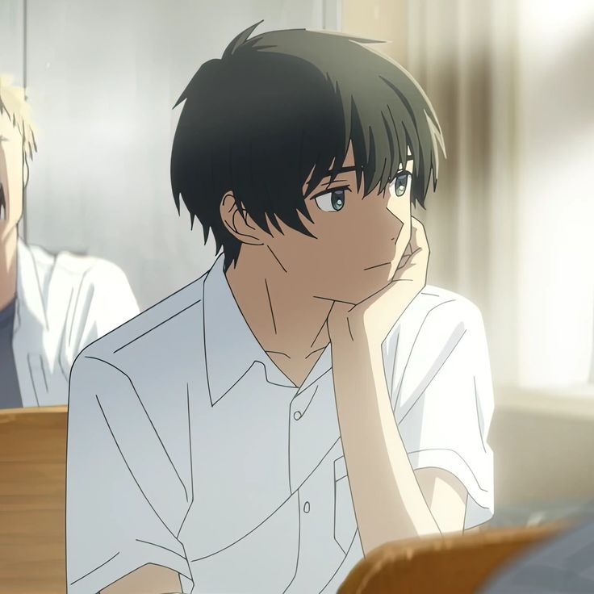
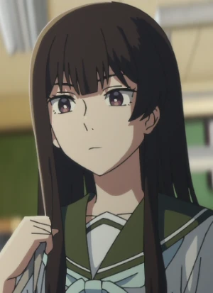

Filme
Tunnel To Summer
Sinopse do filme:
O Túnel para o Verão, a Saída das Despedidas (The Tunnel to Summer, the Exit of Goodbyes) acompanha Kaoru Tono, um jovem marcado pela morte da irmã, Karen, há cinco anos, e por um ambiente familiar difícil, que descobre o lendário Túnel Urashima — um local onde as leis do tempo e do espaço não se aplicam e que concede qualquer desejo em troca de anos da própria vida
12
1h 23m
2022
Animação
Romance
Drama
Ficção Cientifica
Fantasia
Personagens

Kaoru Tono
(voz de Oji Suzuka no original). Um estudante reservado que vive em uma cidade rural e enfrenta um ambiente familiar conturbado após a morte trágica de sua irmã mais nova, Karen. Ao encontrar o Túnel Urashima, ele vê a oportunidade de tentar recuperar o que perdeu

Anzu Hanashiro
Uma aluna transferida de Tóquio com postura distante e direta. Ela esconde o desejo de se tornar mangaká e propõe uma aliança a Kaoru para investigar os segredos e as regras temporais do túnel